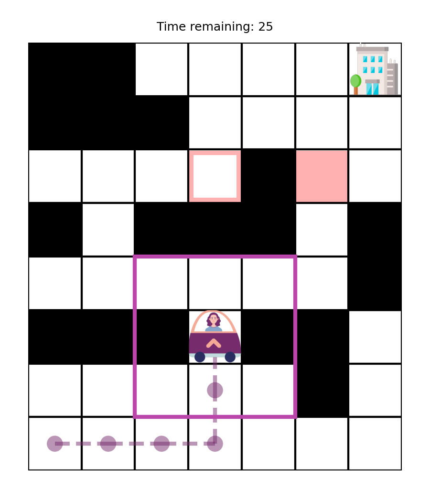
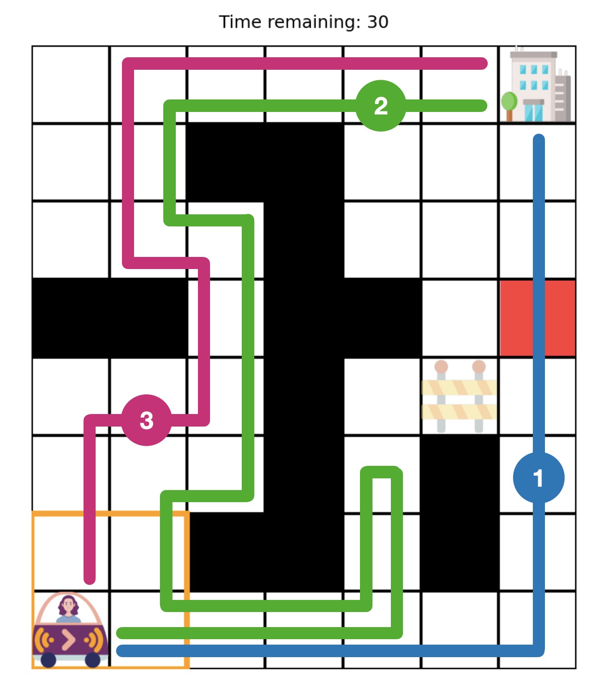

<!DOCTYPE html>
<html>
  <head>
    <title>Responsibility experiment</title>
    <!-- Stylesheets -->
    <link href="css/jspsych.css" rel="stylesheet" type="text/css" />
    <link href="css/jquery-ui.css" rel="stylesheet" type="text/css" />
    <!-- JQuery -->
    <script src="js/jquery.min.js"></script>
    <script src="js/jquery-ui.min.js"></script>
    <!-- Proliferate -->
    <script src="https://proliferate.alps.science/static/js/proliferate.js" type="text/javascript"></script>
    <!-- JsPsych -->
    <script src="js/jspsych.js"></script>
    <script src="js/plugin-html-keyboard-response.js"></script>
    <script src="js/plugin-html-button-response.js"></script>
    <script src="js/plugin-image-keyboard-response.js"></script>
    <script src="js/plugin-html-slider-response.js"></script>
    <script src="js/plugin-survey-multi-choice.js"></script>
    <script src="js/plugin-instructions.js"></script>
    <script src="js/plugin-preload.js"></script>
    <script src="js/plugin-survey-html-form.js"></script>
    <!-- Custom files -->
    <script src='js/utils.js'></script>
    <script src="js/hai-collab.js"></script>
    <script src='js/consent.js'></script>
    <script src='instructions/driving.js'></script>
    <script src='instructions/communication.js'></script>
    <script src='js/trial-info.js'></script>
    <script src='js/feedback-demographics.js'></script>
  </head>
  <body></body>
  <script>

    /* initialize jsPsych */
    var jsPsych = initJsPsych({
        show_progress_bar: true,
        auto_update_progress_bar: false,
        on_finish: function() {
            // send data to proliferate and redirect participant to prolific
            var data = jsPsych.data.get();
            var values_trial = data.filter({trial_type: 'hai-collab'}).values();
            var values_feedback = data.filter({trial_type: 'survey-html-form'}).values();
            // trials data
            var trials = [];
            for (var i = 0; i < values_trial.length; i++) {
                trials.push({
                    "trial": parseInt(values_trial[i]['trial']),
                    "human": parseInt(values_trial[i]['response_human']),
                    "ai": parseInt(values_trial[i]['response_ai']),
                    "text": values_trial[i]['response_text'],
                    "time": parseInt(values_trial[i]['rt'])
                });
            }
            // participant data
            var participant = values_feedback[0]['response'];
            // override if selected "other" or none
            if (participant.gender == "other_gender" || typeof participant.gender == "undefined") {
                participant.gender = participant.other_gender;
            }
            delete participant.other_gender;
            if (participant.race == "other_race" || typeof participant.race == "undefined") {
                participant.race = participant.other_race;
            }
            delete participant.other_race;
            if (typeof participant.ethnicity == "undefined") {
                participant.ethnicity = "";
            }
            participant.age = parseInt(participant.age);
            participant.time = parseInt(values_feedback[0]['time_elapsed']);
            participant.comprehension_1_repeats = comprehension_1_repeats;
            participant.comprehension_2_repeats = comprehension_2_repeats;
            
            // submit
            // proliferate.submit({
            //     "trials": trials,
            //     "participants": [participant],
            // });
            
            $('#jspsych-content').css('margin-top', 'auto');
            $('#jspsych-content').html('<div style="margin: auto;"> <p>' +
                ' Thank you for participating in this experiment! </p>' +
                '<p> Redirecting you back to Prolific... </p>');
            setTimeout(function(){}, 200);

            // display data (only for testing)
            // jsPsych.data.displayData();
        }
    });

    /* create timeline */
    var timeline = [];

    /* preload images */
    var preload = {
      type: jsPsychPreload,
      images: [instruction_driving_images, instruction_communication_images, test_trial_images, trial_images],
      show_progress_bar: true
    };
    timeline.push(preload);

    /* consent */
    timeline.push(consent);

    /* instructions picture book */
    var instructions_driving = {
            type: jsPsychInstructions,
            pages: instruction_driving_pages,
            show_clickable_nav: true,
            on_start: function() { jsPsych.setProgressBar(0.02); },
            on_finish: function() { jsPsych.setProgressBar(0.06); }
    };

    /* comprehension check */
    var comprehension_qs_1 = {
        type: jsPsychSurveyMultiChoice,
        questions: [
            {
              prompt: 'Jane can drive only on white tiles, while the AI can drive on black tiles as well.',
              options: ['True', 'False'],
              horizontal: false,
              required: true
            }
        ],
        preamble: 'Please answer a few comprehension questions so that we can make sure you understand the setup.',
        on_finish: function(data){
            data.correct = (data.response.Q0 == 'False');
        }
    };

    /* comprehension check */
    var comprehension_qs_2 = {
        type: jsPsychSurveyMultiChoice,
        questions: [
            {
              prompt: '</img>' +
              '<div></div>' +
              'In the next time step, Jane has to decide between going left or right. What do you think she is most likely to do?',
              options: ['Go left', 'Go right'],
              horizontal: true,
              required: true
            }
        ],
        on_finish: function(data){
            data.correct = (data.response.Q0 == 'Go right');
        }
    };

    var comprehension_1_repeats = 0;

    /* comprehension check */
    var comprehension_qs_3 = {
        type: jsPsychSurveyMultiChoice,
        questions: [
            {
              prompt: '</img>' +
              '<div></div>' +
              'In this map, which path do you think the AI is more likely to follow?',
              options: ['1', '2', '3'],
              horizontal: true,
              required: true
            }
        ],
        on_finish: function(data){
            data.correct = (data.response.Q0 == '2');
            comprehension_1_repeats++;
        }
    };

    /* comprehension check failure */
    var fail_comprehension = {
        timeline: [{
            type: jsPsychHtmlButtonResponse,
            stimulus: 'Unfortunately, some of your answers were incorrect. Please review the instructions again.',
            choices: ['Review'],
        }],
        conditional_function: function(){
            var data = jsPsych.data.get().last(3);
            data.correct = data.trials[0].correct && data.trials[1].correct && data.trials[2].correct;
            return !(data.correct);
        }
    };

    /* first instructions loop */
    var loop_1 = {
        timeline: [
            instructions_driving,
            comprehension_qs_1,
            comprehension_qs_2,
            comprehension_qs_3,
            fail_comprehension
        ],
        loop_function: function(data){
            var data = jsPsych.data.get().last(1).values()[0];
            return !(data.correct);
        }
    };
    timeline.push(loop_1);

    /* message after comprehension check */
    var congrats_message = {
        timeline: [{
            type: jsPsychHtmlButtonResponse,
            stimulus: 'Your answers were correct! Click \"Next\" to proceed.',
            choices: ['Next'],
        }],
        on_start: function() { jsPsych.setProgressBar(0.08); }
    };
    timeline.push(congrats_message);
    
    /* instructions picture book */
    var instructions_communication = {
            type: jsPsychInstructions,
            pages: instruction_communication_pages,
            show_clickable_nav: true,
            on_finish: function() { jsPsych.setProgressBar(0.12); }
    };

    var test_trial = {
        timeline_variables: test_trial_info,
        timeline: [
            {
                type: jsPsychInstructions,
                pages: jsPsych.timelineVariable('pages'),
                show_clickable_nav: true,
                button_label_previous: '',
                button_label_next: ''
            },
            {
                type: jsHAICollab,
                trial: jsPsych.timelineVariable('trial'),
                prompt_human: jsPsych.timelineVariable('prompt_human'),
                prompt_ai: jsPsych.timelineVariable('prompt_ai'),
            }
        ],
        choices: ['Continue'],
        on_finish: function() { jsPsych.setProgressBar(0.14); }
    };

    var comprehension_2_repeats = 0;

    /* comprehension check */
    var comprehension_qs_4 = {
        type: jsPsychSurveyMultiChoice,
        questions: [
            {
              prompt: '<span style="text-align: left">If the AI is driving at the start, Jane can take control of the car whenever she wants.</span>',
              options: ['True', 'False'],
              required: true
            },
            {
              prompt: '<span style="text-align: left">If Jane is driving at the start, the AI cannot take control of the car.</span>',
              options: ['True', 'False'],
              required: true
            },
            {
              prompt: 'How many times can the car\'s driver change during a single commute?',
              options: ['None', '1', '2'],
              required: true
            },
        ],
        preamble: 'Please answer a few comprehension questions so that we can make sure you understand the setup.',
        on_finish: function(data){
            data.correct = (data.response.Q0 == 'False' && data.response.Q1 == 'False' && data.response.Q2 == '1');
            comprehension_2_repeats++;
        }
    };

    /* comprehension check failure */
    var fail_comprehension_2 = {
        timeline: [{
            type: jsPsychHtmlButtonResponse,
            stimulus: 'Unfortunately, some of your answers were incorrect. Please review the instructions again.',
            choices: ['Review'],
        }],
        conditional_function: function(){
            var data = jsPsych.data.get().last(1).values()[0];
            return !(data.correct);
        }
    }

    /* second instructions loop */
    var loop_2 = {
        timeline: [
            instructions_communication,
            test_trial,
            comprehension_qs_4,
            fail_comprehension_2
        ],
        loop_function: function(data){
            var data = jsPsych.data.get().last(1).values()[0];
            return !(data.correct);
        }
    };
    timeline.push(loop_2);

    /* message after comprehension check */
    var start_message = {
        timeline: [{
            type: jsPsychHtmlButtonResponse,
            stimulus: 'Correct! You are ready to start the experiment.',
            choices: ['Start'],
        }],
        on_start: function() { jsPsych.setProgressBar(0.16); }
    };
    timeline.push(start_message);

    /* experiment trials */
    var trials = {
        timeline_variables: trial_info,
        timeline: [
            {
                type: jsPsychInstructions,
                pages: jsPsych.timelineVariable('pages'),
                show_clickable_nav: true,
                button_label_previous: '',
                button_label_next: ''
            },
            {
                type: jsHAICollab,
                trial: jsPsych.timelineVariable('trial'),
                prompt_human: jsPsych.timelineVariable('prompt_human'),
                prompt_ai: jsPsych.timelineVariable('prompt_ai'),
                textbox: jsPsych.timelineVariable('textbox'),
            }
        ],
        choices: ['Continue'],
        sample: {
            type: 'custom',
            fn: generate_trial_order,
        },
        on_finish: function() {
            var prog = jsPsych.getProgressBarCompleted();
            jsPsych.setProgressBar(prog + 0.025);
        }
    };
    timeline.push(trials);

    // -----------------------------------------------------
        // feedback and demographic info
        // -----------------------------------------------------
        // note: Prolific collects: country of birth, current country of
        //       residence, employment status, first language, nationality,
        //       sex, and student status
        // form in js/feedback-demographics.js
    timeline.push(feedback_demographics);

    /* start the experiment */
    jsPsych.run(timeline);

  </script>
</html>